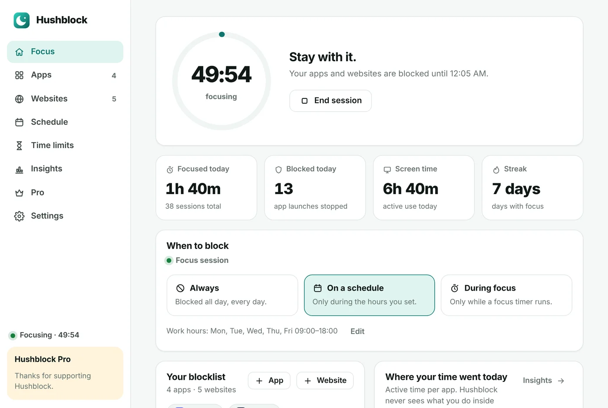
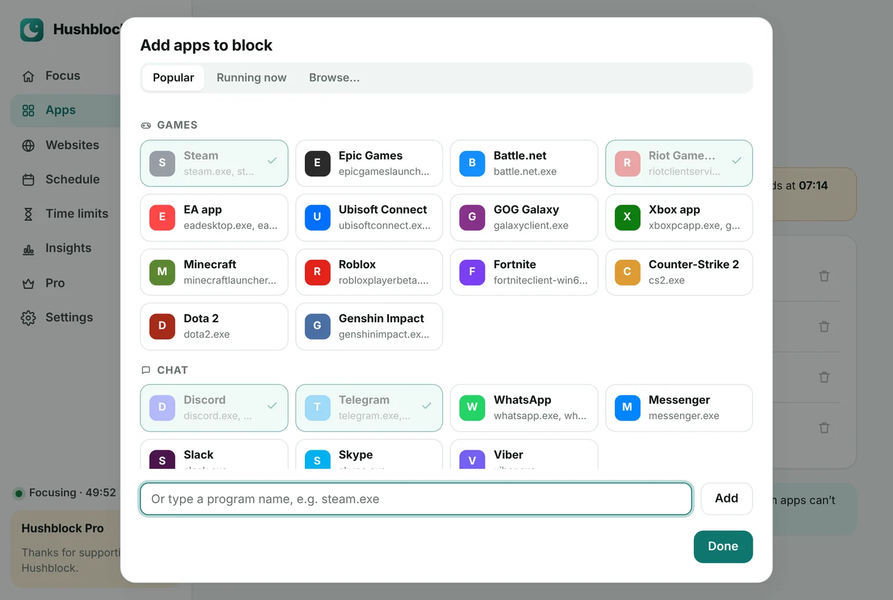
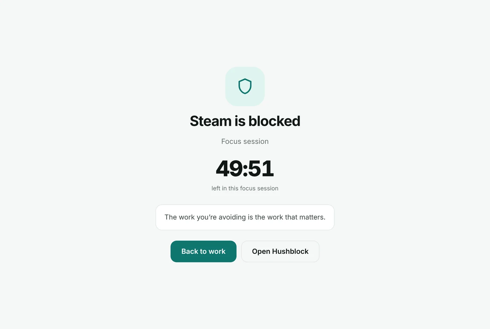
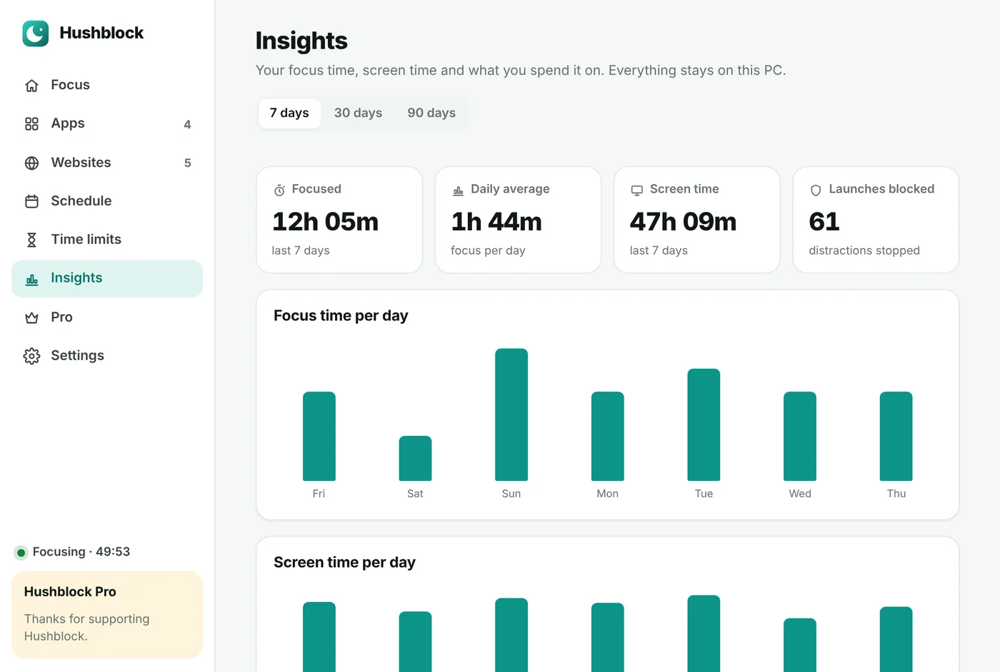

Pick your distractions in seconds
Choose from popular games, launchers and chat apps, from what’s running right now, or browse for any program.
- 30+ popular apps ready to go
- Shows the apps open right now
- Windows system apps are protected
Steam, Discord, Telegram, games, YouTube, TikTok — Hushblock closes them the moment they open, across your whole PC and every browser. Focus timer, schedules and daily limits included.
Windows 10 and 11 · 64-bit · 2.7 MB · No account needed

One Pro license works everywhere — on your PC and in your browser, up to 3 devices.
Blocks apps and websites system-wide. Lives in the tray, starts with Windows. Windows 10 and 11 (64-bit).
Download Hushblock-Setup.exeThe Mac app is in the works. Leave your email and we’ll write once when it’s ready — nothing else.
Notify meWebsite blocker with a friendly block page and focus timer for Chrome, Edge, Brave and Firefox — on any computer.
Get the extensionBrowser blockers stop at the browser. Hushblock also stops the games and chat apps on your desktop.
Steam, Epic, Riot, Roblox, Discord, Telegram, WhatsApp — one click from the list, or pick any program on your PC.
YouTube, Instagram, Reddit, X — blocked in Chrome, Edge, Firefox, Opera and Brave at once, including mobile domains and short links.
25, 50 or 90 minutes. Everything on your list stays closed until the timer ends — then take a break.
Work hours, study time, no games after 23:00 — Hushblock switches on and off by itself.
30 minutes of Discord a day, an hour of games. When the time is up, the app stays closed until tomorrow.
No stopping early, no pausing, no quitting Hushblock until the session ends. For the days you really need it.
Choose from popular games, launchers and chat apps, from what’s running right now, or browse for any program.

When you open something you blocked, it closes and Hushblock shows you how much focus time is left. Back to work in one click.

Focus time, screen time and your top apps for the last 7, 30 or 90 days. Everything stays on your PC.

Open Hushblock-Setup.exe and click through the short setup.
Windows asks once. It’s needed to block websites in every browser. Apps are blocked either way.
Choose apps and websites, decide when to block them — done. Hushblock waits in the tray.
—Pro unlocks everything in the Windows app and the browser extension with one license.
After paying you get a license key. In the app: Pro → Already have a license key? → paste → Activate.
While blocking is on, Hushblock closes the apps on your list the moment they start. Save your work in those apps before a session starts — they’re closed without asking.
It adds the sites to the Windows hosts file, so they don’t load in any browser. That’s why it needs administrator rights once. When blocking turns off, the entries are removed automatically. A tab that was already open may keep working until you reload it.
Yes. Set blocking to On a schedule and pick your days and hours, or use During focus to block only while a timer runs.
Parts of Windows (Explorer, Task Manager, system services) and Hushblock itself are protected so your PC always keeps working.
No. Your lists and statistics are stored only on your PC. The app talks to the internet only to check a Pro license key. Read the privacy policy.
Great — use the same license key in the app (Pro → Already have a license key?). One key works on up to 3 devices.
Settings → Apps → Hushblock → Uninstall. It removes its website blocks and startup task, and asks whether to keep your settings.
We’re working on it. Click Notify me above to get one email when it’s out.